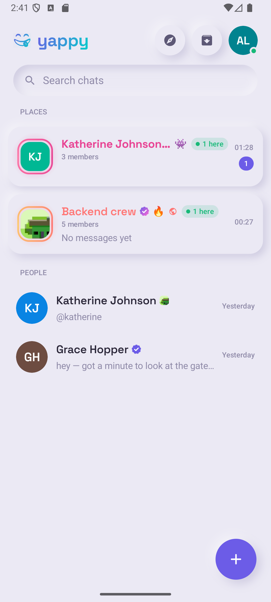
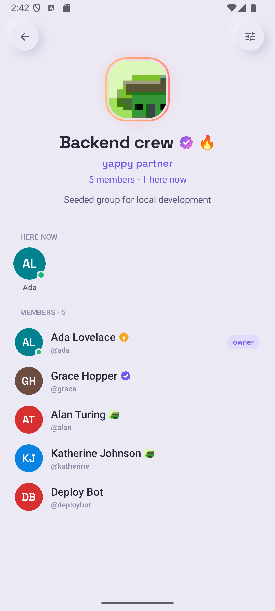
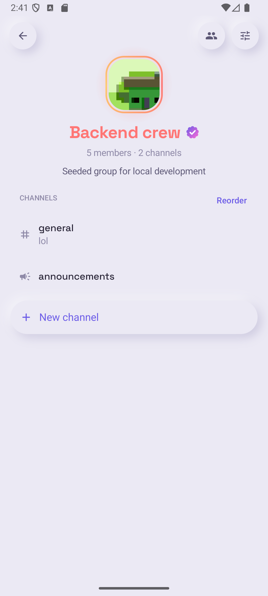
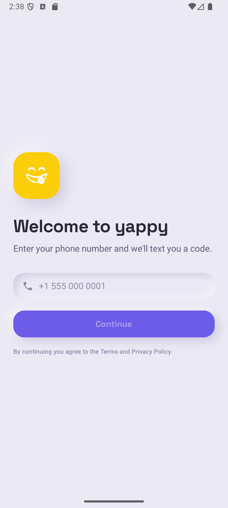

Every other app treats a group as a thread with more people in it. yappy treats it as a place. One you can see into before you walk in, that keeps what you collected together, and that looks like yours.

Open one and it answers the questions a place answers: who is here right now, what is happening, and what have we gathered between us. Groups are the only raised cards on the home screen, and people are quiet rows underneath. The hierarchy is the argument.
Owners get a real say in how theirs looks: an accent, a gradient, a glow, an emoji. Flair colours the ring and the title wherever the group appears, so a customised group reads as somewhere specific rather than a row in someone else's app.

Any group can become a space, with several channels under one membership. It keeps its id, its members, its roles and its invite links, and the history moves into the first channel. Nothing to re-create, no one to re-invite.


Membership and roles live on the space; channels hold messages. Promote someone once and it applies everywhere, because the channel never had its own copy.
Colour-coded roles with their own permissions, alongside the owner, admin and moderator ladder rather than instead of it. Roles grant capabilities; the ladder grants authority over people.
Verified, partner and staff marks, plus affiliations: a badged group can vouch for a member, and its logo sits beside their name. Either side can withdraw at any time.
A real bot API with token auth, rich embed cards, and automatic link unfurling. Only bots may post rich cards, because a hand-crafted one is a phishing kit.
Uploads go straight to object storage, presigned. Attachments sit in a private bucket behind a per-viewer authorisation check, so membership decides who sees them rather than a guessable URL.
Accents, gradients, glow and shimmer, set by the owner and rendered wherever the group appears. Flair colours around an element and never restyles it.